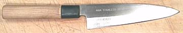
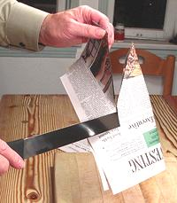
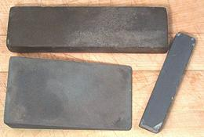
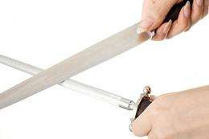
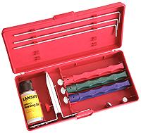
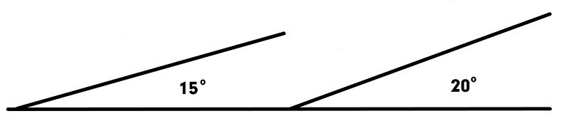
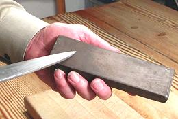
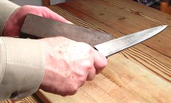
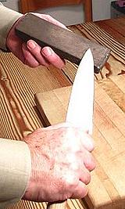
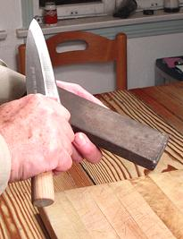

SAFARI
Users
- General
- Sharpness Tests & Inspection
- What you Need & Don't Need
- Sharpening Stones - Yes! and again, Yes!
- Sharpening Steels - Probably not.
- Sharpening "Systems" - They're not for me.
- Electric Sharpener - No.
- How to Sharpen
General
Dull knives are frustrating, damage the food you are cutting, and are dangerous. A dull knife may skid unexpectedly and still be sharp enough to cut into you. If a knife is dull enough to "need to be sent out for sharpening" it has been too dull to use for quite a while. There is no excuse for dull knives.
The pros have been afraid to tell you the truth - and the truth is this: you need to learn to sharpen your own knives, and you need to learn to do it with stones, and you need to do it early and often - and it isn't hard to do. If you can learn to slice thin, you can learn to sharpen knives.
 As "Exhibit A" I present my Mioroshi Deba. It has been used almost every single day for about 40 years, and every one of those days it's been wicked sharp. At its worst it would still do well with the "newspaper test". It has never seen a knife sharpener (I don't own one), nor has it touched a sharpening steel. Notice that for 40 years of use it shows rather little wear.
Maintaining a knife like this is not difficult, and it's not tedious -
unless you have been negligant and let your knife get very dull. A prep
knife needs to be sharpened once or twice a week, depending on how much
you use it. A filleting knife may need to be sharpened after every fish,
and a boning knife should be sharpened after every use. If you cannot make
it totally sharp in just a few minutes, you have been trying to cut with a
very dull knife.
Sharpness Tests and Inspection
The Newspaper Test
 The real test of sharpness is, of course, how the knife feels in actual use. You might, however, want to check it while sharpening, and this is an imperfect but reasonable test.Dry the knife blade completely. Take a half page of newspaper, and fold it over. Crease it only where you'll be holding it. Starting with the handle end of the blade just in front of your fingers draw the knife across the paper at moderate speed in a single smooth stroke as you slice downward. Use very light downward pressure. As in the photo, the blade should cut, not tear the paper.
How far you get before the paper starts to tear is a reasonable measure of sharpness. Ideally, a long knife should cut right off the edge and a short knife should cut until the tip clears.
Visual Inspection
With a strong light above, hold the knife so the sharp edge points directly towards the light. Looking directly down at the edge, and moving the edge about just a little, it should be entirely invisible. If there are any glints of light from it, it is nicked or dull.Finger Inspection
Hold the knife by it's handle in one hand. With the other hand, place your thumb on one side of the blade, your forefinger opposite it and draw your fingers slowly straight off the edge. If you feel any burr at the edge on either side the knife is plenty dull. Check this at various points on the blade. You can feel burrs that are too small to see.You can also perform this test by running a fingernail off the edge and see if it catches on a burr. This test is very effective to see if you've stoned all the way to the edge when reshaping blade angles.
Another "finger test" is to lightly rub your thumb across the edge. You can get a pretty good feel for sharpness. That's crosswise - not lengthwise, or there'll be blood everywhere!
What you Need & Don't Need
You Need Stones
 You need two sharpening stones, one medium and one fine, and your cutting board. If you really abuse your knives or wait way too long to sharpen them you might need a coarse stone.
Types of stone and terminology are complex and confusing, so rather than clog up this page with all the details I have made a separate page for Sharpening Stones .
Both man-made and natural (Arkansas) stones will work fine, but man-made stones cut faster and natural stones aren't as good with stainless as they are with carbon steel. Some stones have a medium and fine side, but in most cases they are not ideally matched for kitchen use. The size you want is 2 inches by 6 inches by 3/4 inch or larger. Can't afford stones? There's a way around that on my Sharpening Stones page too.
Lubrication will help keep stones cutting well and prevents them from becoming clogged with metal. The lubrication you want to use in the kitchen is running water. Oil is not only messy but the stone will not cut as fast. Experts have found that oil produces an inferior edge because it holds grit from the stone causing microscopic chips in the edge. Sportsmen use oil because water may not be available. I occasionally scrub my stones with a scouring kitchen cleanser (similar to Comet) to clear the pores and keep them cutting well.
What stones would I choose? I like a fine India stone
used with water for aggressive edge shaping, but at 280 grit it's too
coarse for a finished edge. I like something around 700 grit for the
finish edge, a fast cutting diamond or water stone (I use a diamond
stone).
- Medium Stone: This is your workhorse stone for preparing a new knife or for re-edging your knives if they have become unpleasantly dull.
- Fine Stone: This stone will be used to finish the edge after using the medium stone. It is also the stone you will do a few strokes on instead of a sharpening steel every time your knife starts to feel just a little off its best.
- Superfine Stone: Hard Arkansas and the like are great for woodworking tools, but just a bit too fine for the kitchen.
- Coarse Stone: Good for sharpening axes. Useful for working out nicks and dents in a badly abused blade. Hopefully you won't need one of these.
Controversial
- Sharpening Steel:
 The traditional steel is useful for realigning the edges of carbon steel knives. Contrary to what you may have read, the steel, in its traditional form, is not a "hone". A hone is a very fine stone that removes metal. The steel does not remove a significant amount of metal from the blade.The job of the steel is to return an edge that has become bent to the side to a straight centered position. It does this through very high pressure, resulting from the tiny point of contact between the knife edge and the steel. It works best on soft blades, and I suspect people's insistence on using the steel is why most Euro-Amercian makers tend to make their knife blades a bit on the soft side.
For modern hard carbon steel blades some knife experts consider the serrated steels you'll commonly find in the stores ineffective and recommend a smooth steel. For stainless knives the effectiveness of either type of steel is subject to considerable doubt.
Because knife users have perceived traditional steels ineffective with today's knives, many have switched to ceramic or diamond grit steels. These are hones and do remove material from the blade edge.
My question is simple. If you're going to be using a hone, why not use a more effective hone, your fine sharpening stone? In my opinion a steel is of little use today, unless you are making heavy use of traditional carbon steel knives. The strokes for honing the edge are exactly the same as sharpening (see below) but just a few strokes on the fine stone.
If you do use a steel, there is controversy there too. Some still use it in the air, as in the photo above, which makes a good show. Others put it point down on the cutting board like a giant nail, which gives better control. Some stroke the knife sharp edge leading (most) and others sharp edge trailing. Even the recommended angle of knife to steel differs, though I'd agree with the 22° opinion (for knives edged at 22° and reject steeper angles). All agree the stroke should be simultaneously across and along the rod, and most agree that 10 strokes on each side is about right. Photo © i0007.
- Sharpening "Systems"
 There are many "sharpening systems" on the market. Most of these contraptions are aimed at holding the knife blade at a consistent and measured angle to the stone. I haven't time for these. When my knife doesn't feel right I want to just grab a fine stone and take a few strokes and get back to cutting. Setting up and taking down a "system" just takes too much time and will discourage me from sharpening my knives often enough.Perhaps the back angle will be a little rounded at the shoulders when sharpening free-hand? Well, it happens that a convex edge is considered one of the better edge forms, offering good durability. Provided the back angle is nicely formed and the edge angle is properly sharp, a little rounding isn't a problem. A lot of rounding is a problem though, so do your best to hold a correct and constant angle.
If you are simply not confident you can hold angles well, the Lansky sharpening system (photo) is well thought of, reasonably priced and relatively quick to set up and take down. It comes in both diamond and regular stone versions. Photo © Lansky Sharpeners.
Not Needed
- Electric Knife Sharpener: One thing
you learn from comparative reviews is that most of these don't work all that
well. Most motorized sharpeners remove too much metal too fast and will wear
out your knives long before their time. Angles are often restricted so you may
not be able to use the ideal angle for the type of knife you are sharpening.
A knife should never be allowed to get so dull it needs an aggressive knife
sharpener. If you get a bad ding in the edge of a knife you can send it
out for professional sharpening, but theoretically that should never happen.
If you do want an electric knife sharpener (commercial kitchens have them to save time and reduce training costs) the Chef's Choice line is the run-away favorite. The 2000 model for larger commercial kitchens can be had for around $430. There are many other models for smaller kitchens going down to about $60, with declining capability at each drop in cost. Most who comment like the ones around US $100 or a little more.
How to Sharpen
If you can learn to slice vegetables thin, you can learn to sharpen knives. The first thing you need to do is get a feel for sharpening angles. This will improve with practice.
A thin vegetable slicing knife (Santoku or Nakiri) should be sharpened at a shallower angle (sharper) than a general prep knife, and so should a filleting knife. A meat cleaver should be sharpened at a much higher angle than a prep knife for a very strong edge.
Back Angle & Edge Angle
The angles at the cutting edge are critical. The standard for commercial knives is a wide back angle of about 18° and a narrow (less than 1/32 inch) edge angle of 22-1/2°. This results in a very steep angle of 45° at the cutting edge, certainly less than ideal, but used by commercial knife makers to make a durable edge for those who never sharpen their knives (most people). Knife sharpening services will maintain these angles for the same reason.
Note that Japanese knives angled on one side only (chisel edge) have an angle of about 25°. This results in an edge much sharper than the 45° edge of a conventional knife angled at 22-1/2° per side. Japanese knife makers also make their knives a bit harder to support this sharp edge.
Personally, since I sharpen my knives early and often, I like a
shallower angle and grind a back angle right out to the edge. This may
take a bit of effort with a new knife, but is easy to maintain once done.
Then I use a few strokes at a slightly steeper angle to create an
extremely narrow edge angle.

Method
While the same stones and general methods work for both carbon steel and stainless steel, there is considerable difference between the two.
- Carbon Steel is hard and brittle. It sharpens quickly and easily to an edge that is actually composed of microscopic teeth. This gives it a very satisfying cutting feel.
- Stainless Steel is a little softer and a whole lot tougher. It takes more strokes on the stone to sharpen and the edge will be smoother and a lot less toothy. It will never have the feel of a carbon steel knife no matter how sharp. The biggest problem is that during sharpening it will build up a feather edge that just bends back and forth as you sharpen from both sides. This must be deliberately broken off.
Depending on the condition of your knife and its typical use you will usually start with your medium stone and then finish with the fine stone. If the knife is still quite sharp you may go directly to the fine stone, as I do with my Santoko.
Generally you will hold the stone in one hand and the knife by its handle in the other hand. If you are unsure you can do this safely or accurately, you can place the stone on a folded up wet towel on your cutting board, but I find this awkward.


 
The upper photos show stroking one side of the knife across the stone, first at the start of the stroke, then at the end of the stroke. The lower pictures show the same for the other side.
After a number of strokes across the stone on both sides, rinse the blade and make a firm cutting stroke across your cutting board. Make sure the full length of the edge contacts the board at some point during the stroke. What this does is break off the feather of a stainless steel edge, or at least weaken it and bend it over so far it'll be taken off by a couple more light strokes on the stone. For a carbon steel knife it will break off teeth that are too long and fragile.
Repeat as needed, always making a few light strokes on the stone after the cutting board slice, until the knife easily passes the newspaper test - or simpler, just feels right when cutting.
Note that every article you'll see tells you to stroke leading with the sharp edge - but I stroke with the sharp edge trailing. I'm very uncomfortable with leading with the sharp edge. Does anyone at all agree with me? Only the Japanese - but I've heard they know a thing or two about knives.
Links
- K1 - Knife Sharpening - eGullet.